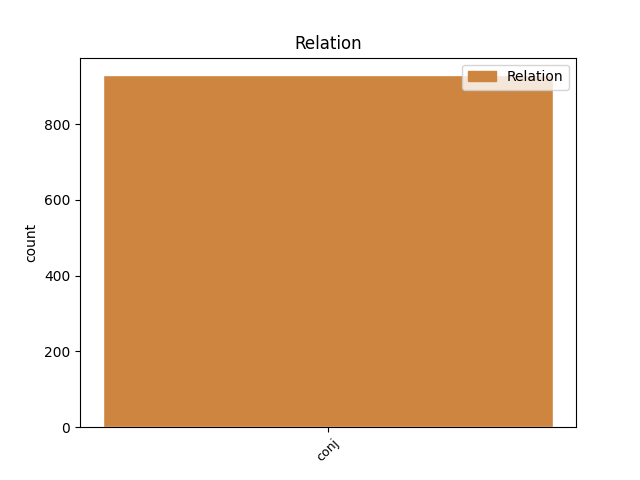
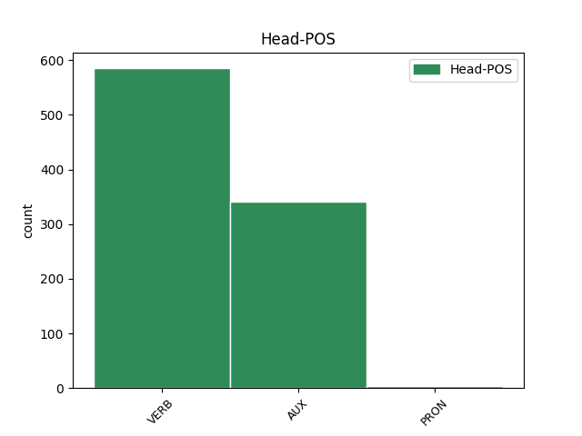
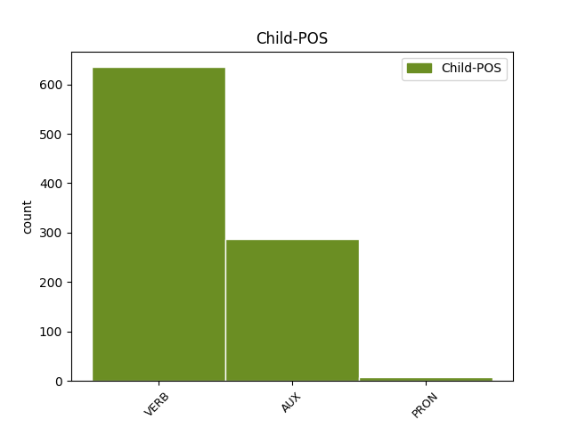

Distribution of features within this leaf



Agreement Rules sorted by frequency.
- When the dependent token is the conjunct(conj) of the head token,
1 #Grillo _ _ _ _ 0 _ _ _
2 non _ _ _ _ 0 _ _ _
3 mi _ _ _ _ 0 _ _ _
4 piace piacere VERB V Mood=Ind|Number=Sing|Person=3|Tense=Pres|VerbForm=Fin 0 _ _ _
5 , _ _ _ _ 0 _ _ _
6 ma _ _ _ _ 0 _ _ _
7 sta essere AUX VA Mood=Ind|Number=Sing|Person=3|Tense=Pres|VerbForm=Fin 4 conj _ _
8 dimostrando _ _ _ _ 0 _ _ _
9 che _ _ _ _ 0 _ _ _
10 il _ _ _ _ 0 _ _ _
11 nuovo _ _ _ _ 0 _ _ _
12 strumento _ _ _ _ 0 _ _ _
13 per _ _ _ _ 0 _ _ _
14 fare _ _ _ _ 0 _ _ _
15 #politica _ _ _ _ 0 _ _ _
16 è _ _ _ _ 0 _ _ _
17 il _ _ _ _ 0 _ _ _
18 #movimento _ _ _ _ 0 _ _ _
19 multilocale _ _ _ _ 0 _ _ _
20 e _ _ _ _ 0 _ _ _
21 non _ _ _ _ 0 _ _ _
22 il _ _ _ _ 0 _ _ _
23 partito _ _ _ _ 0 _ _ _
24 nazionale _ _ _ _ 0 _ _ _
Disagree Examples:
1 STO _ _ _ _ 0 _ _ _
2 MALE _ _ _ _ 0 _ _ _
3 :c _ _ _ _ 0 _ _ _
4 #rt _ _ _ _ 0 _ _ _
5 segui seguire VERB V Mood=Imp|Number=Sing|Person=2|Tense=Pres|VerbForm=Fin 0 _ _ _
6 mi _ _ _ _ 0 _ _ _
7 ti _ _ _ _ 0 _ _ _
8 seguo seguire VERB V Mood=Ind|Number=Sing|Person=1|Tense=Pres|VerbForm=Fin 5 conj _ _
9 e _ _ _ _ 0 _ _ _
10 ti _ _ _ _ 0 _ _ _
11 faccio _ _ _ _ 0 _ _ _
12 una _ _ _ _ 0 _ _ _
13 domanda _ _ _ _ 0 _ _ _
14 .. _ _ _ _ 0 _ _ _
15 mi _ _ _ _ 0 _ _ _
16 annoio _ _ _ _ 0 _ _ _
17 :c _ _ _ _ 0 _ _ _
18 #follow _ _ _ _ 0 _ _ _
19 #followme _ _ _ _ 0 _ _ _
20 x9 _ _ _ _ 0 _ _ _
1 Ho avere AUX VA Mood=Ind|Number=Sing|Person=1|Tense=Pres|VerbForm=Fin 0 _ _ _
2 letto _ _ _ _ 0 _ _ _
3 la _ _ _ _ 0 _ _ _
4 lista _ _ _ _ 0 _ _ _
5 di _ _ _ _ 0 _ _ _
6 i _ _ _ _ 0 _ _ _
7 ministri _ _ _ _ 0 _ _ _
8 di _ _ _ _ 0 _ _ _
9 il _ _ _ _ 0 _ _ _
10 governo _ _ _ _ 0 _ _ _
11 Monti _ _ _ _ 0 _ _ _
12 e _ _ _ _ 0 _ _ _
13 parecchi _ _ _ _ 0 _ _ _
14 mi _ _ _ _ 0 _ _ _
15 sembrano sembrare VERB V Mood=Ind|Number=Plur|Person=3|Tense=Pres|VerbForm=Fin 1 conj _ _
16 inadatti _ _ _ _ 0 _ _ _
17 a _ _ _ _ 0 _ _ _
18 il _ _ _ _ 0 _ _ _
19 ministero _ _ _ _ 0 _ _ _
20 che _ _ _ _ 0 _ _ _
21 gli _ _ _ _ 0 _ _ _
22 è _ _ _ _ 0 _ _ _
23 stato _ _ _ _ 0 _ _ _
24 dato _ _ _ _ 0 _ _ _
25 ! _ _ _ _ 0 _ _ _
1 @user _ _ _ _ 0 _ _ _
2 sto essere AUX VA Mood=Ind|Number=Sing|Person=1|Tense=Pres|VerbForm=Fin 0 _ _ _
3 facendo _ _ _ _ 0 _ _ _
4 l' _ _ _ _ 0 _ _ _
5 imperativo _ _ _ _ 0 _ _ _
6 in _ _ _ _ 0 _ _ _
7 spagnolo _ _ _ _ 0 _ _ _
8 e _ _ _ _ 0 _ _ _
9 il _ _ _ _ 0 _ _ _
10 mio _ _ _ _ 0 _ _ _
11 cervello _ _ _ _ 0 _ _ _
12 sta essere AUX VA Mood=Ind|Number=Sing|Person=3|Tense=Pres|VerbForm=Fin 2 conj _ _
13 andando _ _ _ _ 0 _ _ _
14 a _ _ _ _ 0 _ _ _
15 fuoco _ _ _ _ 0 _ _ _
16 cc _ _ _ _ 0 _ _ _
1 Il _ _ _ _ 0 _ _ _
2 Governo _ _ _ _ 0 _ _ _
3 #Monti _ _ _ _ 0 _ _ _
4 è essere AUX V Mood=Ind|Number=Sing|Person=3|Tense=Pres|VerbForm=Fin 0 _ _ _
5 l' _ _ _ _ 0 _ _ _
6 unica _ _ _ _ 0 _ _ _
7 alternativa _ _ _ _ 0 _ _ _
8 possibile _ _ _ _ 0 _ _ _
9 , _ _ _ _ 0 _ _ _
10 credo credere VERB V Mood=Ind|Number=Sing|Person=1|Tense=Pres|VerbForm=Fin 4 conj _ _
11 che _ _ _ _ 0 _ _ _
12 in _ _ _ _ 0 _ _ _
13 questo _ _ _ _ 0 _ _ _
14 momento _ _ _ _ 0 _ _ _
15 di _ _ _ _ 0 _ _ _
16 crisi _ _ _ _ 0 _ _ _
17 la _ _ _ _ 0 _ _ _
18 politica _ _ _ _ 0 _ _ _
19 vada _ _ _ _ 0 _ _ _
20 messa _ _ _ _ 0 _ _ _
21 via _ _ _ _ 0 _ _ _
22 , _ _ _ _ 0 _ _ _
23 avanti _ _ _ _ 0 _ _ _
24 con _ _ _ _ 0 _ _ _
25 il _ _ _ _ 0 _ _ _
26 gov _ _ _ _ 0 _ _ _
27 . _ _ _ _ 0 _ _ _
28 tecnico _ _ _ _ 0 _ _ _
1 ma _ _ _ _ 0 _ _ _
2 voi _ _ _ _ 0 _ _ _
3 credete credere VERB V Mood=Ind|Number=Plur|Person=2|Tense=Pres|VerbForm=Fin 0 _ _ _
4 che _ _ _ _ 0 _ _ _
5 il _ _ _ _ 0 _ _ _
6 governo _ _ _ _ 0 _ _ _
7 monti _ _ _ _ 0 _ _ _
8 eviterà _ _ _ _ 0 _ _ _
9 la _ _ _ _ 0 _ _ _
10 crisi _ _ _ _ 0 _ _ _
11 italiana _ _ _ _ 0 _ _ _
12 , _ _ _ _ 0 _ _ _
13 io _ _ _ _ 0 _ _ _
14 ho avere VERB V Mood=Ind|Number=Sing|Person=1|Tense=Pres|VerbForm=Fin 3 conj _ _
15 molti _ _ _ _ 0 _ _ _
16 dubbi _ _ _ _ 0 _ _ _